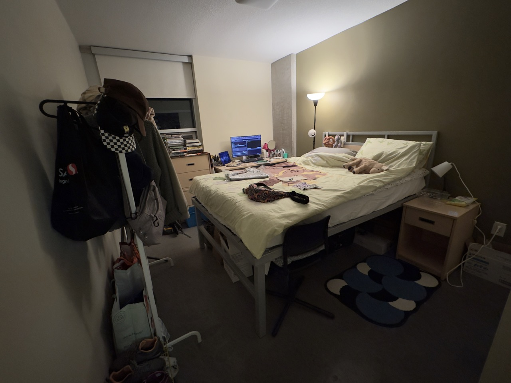
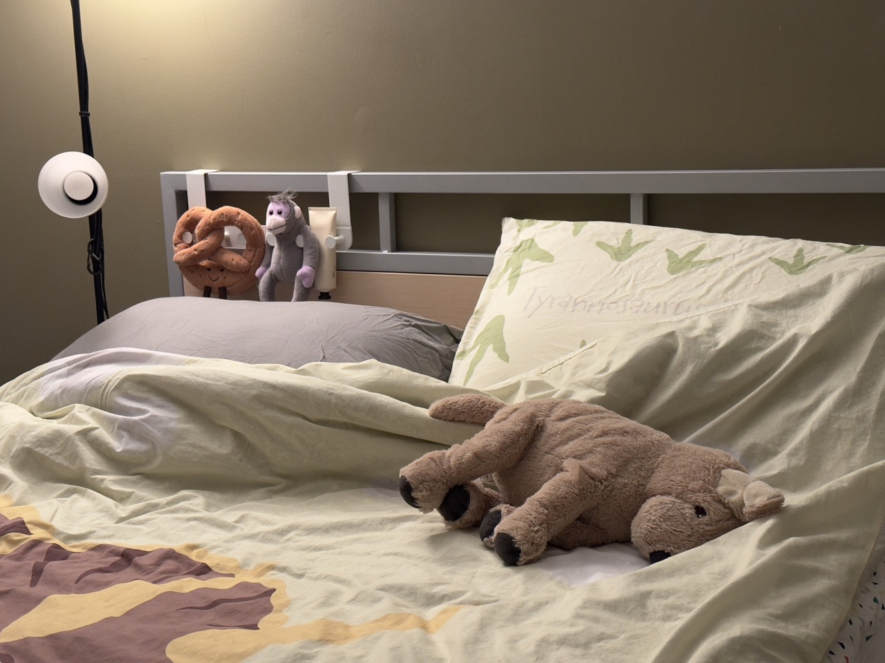

Set Up Again: My Room (hopefully) until the Graduation?


It is hilarious if one looks at the thumbnails of my last room post and this one's and couldn't tell the difference, because the bedroom layouts here in the building are pretty much the same, I guess. Anyway, I finished settling down in the new room, and I also tried to arrange things in a more approachable way. I bet it's only gonna start being messy in two weeks... My mum always tells me that I should always put things back in the place where I get them, so that I don't need extra time to do the whole cleaning of the room, and save some time; to me, I feel like cleaning isn't the time for restore the look of a room to the previous, but actually for one to be refreshed. Another thing is, if I can't see the things, I would not be able to remember to use them; so even my room is messier in this way, putting everything outside instead of keeping it in the drawers, boxes, and cabinets, I still enjoy being surrounded by them if it's not during the moving time.
I hope I'm not the only one when seeing some of the familiar items in a different space and layout, would strongly feel like owning them again... Is "owning" even a proper word for my case? When I show these items, which are closely bound to me, to others, normally, people see the perspective of consumption and goods first. I do see that the possession of things indeed is the crucial part to this, but is it easier for me to see them from a different angle, considering how much time and how they occupy the space of rooms with me?
I guess I should not avoid talking to them based on their functionality, whether how practical they are or how much they are worth, but still, to me, most of them, when they stand still and not be functional to me, I see them more like sculptures, which they can be meaningful and playful simply by existing in the room here with me... I assume that this is one of the main reasons that I get crazy about seeing painters going for still-life painting. The thoughts behind the re-situation of the everyday? items could and must? be political, social, but the aesthetics, the eye of catching the moments, are certainly personal in my opinion.